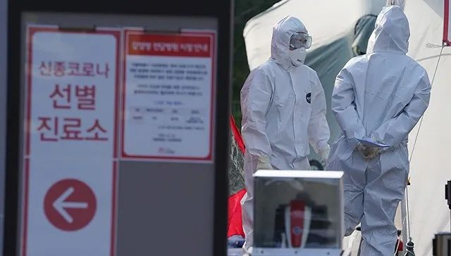
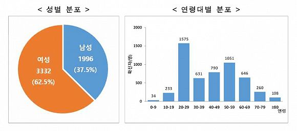

疫情预警升至最高，韩国将检测“新天地”教会全部成员
原文链接 备份链接 韩国已经过了政府防疫部门能独立控制疫情的阶段，现在已经进入整个社会都要配合防疫的关键时期。根据相关部门的推演，3月3日之前将是韩国是否能有效控制疫情的时间窗口 2月23日，在韩国大邱，工作人员在一家市场内进行消毒工作。 …

图片来源：Yonhap
记者：潘金花
“
“新天地教会有责任积极配合政府及防疫部门的工作，但在提交信徒名单时却不断拖延、伪造，并有组织地回避调查，且据我们了解，该教会目前仍在各种地下场所进行传教和聚会。“
”
韩国中央防疫对策本部3月4日通报，截至当天零时，韩国较昨日零时新增516例新冠病毒感染病例，较昨日下午4时新增142例，累计确诊5328例，死亡增至32例，治愈增至 41例。
截至目前，除确诊患者外，韩国接受病毒检测的人数累计131379人，24小时新增10340人，有102965人的检测结果呈阴性，其余28414人的结果还未出炉。

来源：韩国中央防疫对策本部
在截至4日零时累计确诊的5328例病例中，分别有4006例和774例出现在大邱和庆尚北道，占比75.2%和14.5%，24小时各新增405例和89例。两地平均每10万人中有164.4和29.1人确诊，其余地区多为1至2人，韩国全境为10.3人。
在大邱和庆北以外，韩国确诊病例数较高的地区还有京畿道101例、首尔市99例、釜山市93例、忠清南道82例以及庆尚南道65例。
截至3日零时，与新天地教会相关的确诊病例共2698人，占比56.1%，其中大部分来自大邱（2383人）和庆北地区（229人）。
值得注意的是，在截至目前的所有确诊病例中，有超四成（41.4%）为20至40岁患者，其中20多岁的女性占较大比例。《中央日报》3日指出，这是新天地教会年轻女性信徒所占比例较高所致。

5328例确诊病例的性别和年龄分布，其中女性占比62.5%，男性37.5%。来源：韩国中央防疫对策本部
韩国中央灾难安全对策本部3日表示，截至当天零时，已联系上新天地教会195162名信徒中的192634人（98.7%）。其中，有症状者达13241人，有6561人已完成病毒检测，大邱信徒的阳性比例高达62%。
首尔方面已在1日以过失杀人罪、伤害罪、违反传染病预防管理相关法律为由，向首尔中央地方监察厅起诉新天地教会会长李万熙等人，李万熙则在2日跪地谢罪，称将积极配合政府。
据《中央日报》3日报道，首尔方面当天还表示，市政府认定新天地法人“损害公益”，决定吊销新天地法人执照，并将于下周召开听证会。据了解，新天地教会于2011年11月在首尔成立法人。
首尔市文化本部长柳延植（音）指出，“新天地教会有责任积极配合政府及防疫部门的工作，但在提交信徒名单时却不断拖延、伪造，并有组织地回避调查，且据我们了解，该教会目前仍在各种地下场所进行传教和聚会。”
随着韩国新冠肺炎疫情形势愈发严峻，据韩国外交部3日消息，截至当天下午3时，因疫情对韩国采取入境管制措施的国家和地区已增至89个。其中，37个对韩国采取全面或限期禁止入境措施，22个对来自韩国入境者进行隔离，30个加大对自韩入境人员的检疫力度。
另据韩联社4日报道，韩国政府当天已为抗击疫情编制了11.7万亿韩元（约合人民币684.3亿元）规模的补充预算，该补充预算案将于5日提交国会。除加强防疫体系外，政府还将投入巨额资金刺激受疫情冲击的内需市场。
这是文在寅政府成立以来第四次制定补充预算案，也是七年来规模最大的一次，超过2015年中东呼吸综合征（MERS）疫情蔓延时制定的预算案规模。
在这11.7万亿韩元的补充预算中，有8.5万亿将用于各项抗疫项目，包括完善和升级防疫体系（2.3万亿）、支援受疫情冲击的中小企业和小工商业者（2.4万亿）、搞活萧条的地方经济（8000亿）、稳定民生与就业（3万亿），其余3.2万亿则将用于填补税收缺口。另针对疫情较严重的大邱和庆北地区，将特别拨款6000亿韩元用于稳定就业。
若加上正在执行的4万亿韩元和二期16万亿韩元的拨款，韩国政府为抗击疫情投入的资金总计将超过30万亿韩元（约合人民币1754.7亿元）。
韩国副总理兼企划财政部长官洪楠基表示，政府认为支持减损复苏经济是当务之急，将积极推动补充预算案获得通过，并在通过后的2个月内执行75%以上的预算。
洪楠基前一日还表示，政府将向弱势群体免费发放1.3亿只口罩，并将推出多项举措解决疫情下口罩难买问题。
他说，将力争把全国口罩的日产量增至1400万只，并将大幅提升通过公共流通网的供给比率（目前为50%），每只售价控制在1200至1500韩元（约合人民币7至9元）。
洪楠基表示，各大药房本周内将全面启动监管系统，防止重复购买口罩的行为；政府将为口罩厂商提供增产补助、保障原料供应等各项支援；还将考虑从巴西、南非等地区进口口罩。
但他也表示，目前而言，韩国口罩仍是质量最好的产品，上述国家的产品均达不到国内KF80级标准，因此不能完全依靠进口。
未经授权 禁止转载

原文链接 备份链接 韩国已经过了政府防疫部门能独立控制疫情的阶段，现在已经进入整个社会都要配合防疫的关键时期。根据相关部门的推演，3月3日之前将是韩国是否能有效控制疫情的时间窗口 2月23日，在韩国大邱，工作人员在一家市场内进行消毒工作。 …
原文链接 备份链接 图片来源：中央日报 记者：肖恩 “ “尽人事听天命，上天会眷顾。” ” “新天地方面对此感到无比愧疚，感谢政府倾力抗击疫情，并请求政府予以宽恕。新天地将积极配合政府并提供力所能及的人力物力援助。” 距离韩国“新天地”大 …
原文链接 备份链接 摘要：刘永辉在韩国岭南大学读博。学校所在地大邱是韩国新型冠状病毒肺炎疫情最严重的地区，2月28日下午（截至当地时间16时），大邱累计确诊1579例新冠肺炎病例，占韩国总数的67.6%，仅仅过了一个晚上，到当地时间2 …
原文链接 备份链接 “若不能有效阻断社区传播， 大邱疫情很可能扩散至全国” 2月24日，首尔市举行紧急会议，称将采取“先发制人”的措施遏制疫情，包括设立24小时运行的筛查中心，让医护人员在此检测疑似病例。图为首尔市市长朴元淳（右二）在会议 …
原文链接 备份链接 澎湃新闻记者 刘栋 实习生 董安琪 新冠病毒疫情在韩国的发展突然加速。 2月20日，韩国新增53例确诊病例，超过了过去一个月所有确诊病例总和。21日上午，韩国疾病预防控制中心（KCDC）最新通报称，再新增52例确诊病 …